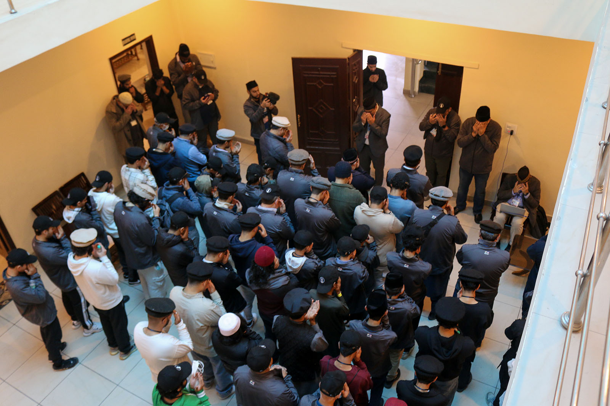

Chapter 13 of 22
A Day Immersed in Prayer and Reflection

After the tour of Darul Masih, we stayed in the area for Zuhr prayers. At the end of the tour, Sadr Khuddam-ul-Ahmadiyya USA, Imam Abdullah Dibba Sahib, once again reminded us of the significance of where we were. He encouraged everyone to seize this opportunity for prayer and reflection. His words resonated deeply, and many of us felt motivated to indulge in even more prayers.
Prayers and Reflection in Qadian
From Zuhr until the end of the day, we immersed ourselves in various acts of worship. After offering Zuhr and Asr prayers, some of us returned to Sara-i-Waseem for lunch, while others ventured out to explore Qadian. Groups made their way to Ahmadiyya Bazar, Sikh Bazar, and Hindu Bazar for some light shopping.
But throughout the day, no matter where people went, we found ourselves returning to the holy sites—Masjid Aqsa, Masjid Mubarak, and Darul Masih. Members could be seen offering nawafil, reciting the Quran, and engaging in deep supplications. Many bowed their heads to the ground in humility, seeking forgiveness and imploring Allah’s help for themselves, their families, and Jamaat members around the world.
It was a deeply spiritual experience, knowing that we were praying in the very grounds where Allah had accepted countless prayers of Hazrat Mirza Ghulam Ahmad (as), his Khulafa, companions, family, and devoted followers. These were the places where Allah had shown so many signs of His living presence. This thought alone filled our hearts with gratitude and a renewed sense of faith.
We also carried with us the prayers and requests of friends and family back home. It was humbling to think of the immense trust people had placed in us to pray for them at these sacred sites.
A Special Sitting: Fazl-e-Omar Foundation
After Maghrib prayers, we had the honor of attending a special session at Masjid Aqsa. Hafiz Makhdoom Shareef Sahib, Additional Nazir Aala Qadian, led the program. He introduced us to the extensive exhibition and books published by the Fazl-e-Omar Foundation.
The lecture provided insights into the foundation’s work in preserving the legacy of the Promised Messiah (as) and contributing to the intellectual and spiritual development of the Jamaat. His presentation was both informative and inspiring, helping us appreciate the rich resources available to deepen our understanding of Islam and Ahmadiyyat.
The session lasted around 30 minutes and was followed by a brief Q&A. It was warmly received by the audience, many of whom planned to visit the exhibition during their stay.
A Wish Fulfilled: The Call to Adhan
Sometimes Allah grants a wish even before we ask for it in our prayers. For me, one such wish had been nestled deep in my heart: to either recite a poem or call the Adhan in Qadian, the birthplace of Ahmadiyyat. It was a dream I held close, never daring to believe it could come true.
Before this trip, members were invited to submit their names if they wished to call the Adhan in Qadian. Unsure if this opportunity was exclusively for Waqf-e-Nau children or open to everyone, I hesitated but eventually submitted my name alongside a young member from Buffalo Jamaat. When we reached Delhi, we were reminded again about the Adhan, so I submitted a few more names from Buffalo.
Today, as the day was winding down, a local murrabi arrived at the conference room in Sara-i-Waseem to listen to members call the Adhan. To my surprise, over a dozen people showed up, and seven of the ten members from Buffalo participated, forming the largest group interested in the Adhan.
When it was my turn, I was overwhelmed with excitement. Alhamdulillah, most of us were selected. I was honored to be chosen to call the Adhan for Fajr prayers the next morning at Masjid Aqsa.
Looking Forward
As I lay in bed, reflecting on the day, I felt a sense of deep fulfillment. Tomorrow morning, my voice will echo out of Minarat-ul-Masih, the symbol of Ahmadiyyat, calling worshippers to prayer in this blessed land.
One cannot be more blessed than this. One cannot ask for anything more than this on this holy trip! Alhamdulillah.